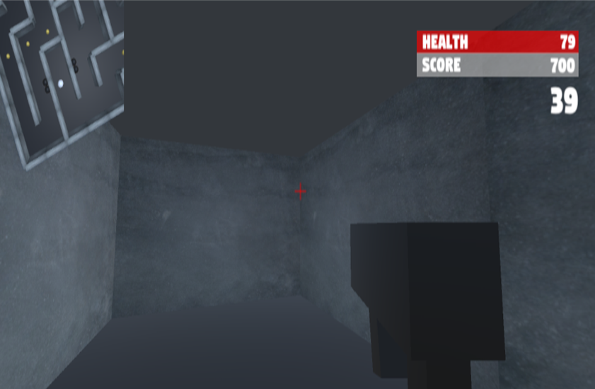

Procedural Maze FPS Game

This game was the first major programming project I produced during college.
The game levels are made up of procedurally generated mazes. I implemented the Recursive
Backtracker algorithm to generate random maze layouts. The A* algorithm is used to
determine whether the maze is solvable before using it as the game level. The aim of the
game is for the player to traverse the maze from the start to the end before the timer
runs out. Along the way, the player kills enemies and obtains collectables in order to
maximise their overall score.
The game was produced in Unity and C#.